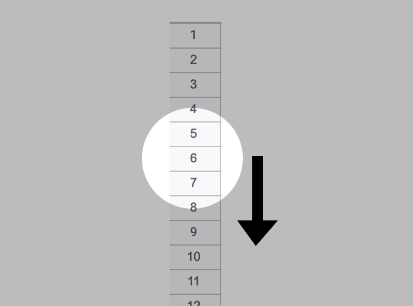

Data-Oriented Design
Not just for performance
What is DOD?
Think about the data FIRST, before anything else.
It came from game developers
Its sworn enemy is object-oriented programming
Which function should we optimize?
func a(x float64) float64 {
return math.Sqrt(x)
}
var data []float64
func b(x int) float64 {
return data[x]
}
float Q_rsqrt( float number )
{
long i;
float x2, y;
const float threehalfs = 1.5F;
x2 = number * 0.5F;
y = number;
i = * ( long * ) &y; // evil floating point bit level hacking
i = 0x5f3759df - ( i >> 1 ); // what the fuck?
y = * ( float * ) &i;
y = y * ( threehalfs - ( x2 * y * y ) ); // 1st iteration
return y;
}
func a(x float64) float64 {
return math.Sqrt(x)
}
var data []float64
func b(x int) float64 {
return data[x]
}
Instruction latency
| sqrtps | 14 cycles |
| movq | ? |
Where's the data?
| Register | 0 cycles |
| L1 | 4 cycles |
| L2 | 11 cycles |
| L3 | 40-75 cycles |
| RAM | 100-300 cycles |
Register
L1
L2/sqrtps
L3
RAM
Let's not talk about disk or network
We could do 20 sqrts while waiting for RAM
If we could just keep everything in cache...
for ( idEntity* ent = activeEntities.Next();
ent != NULL;
ent = ent->activeNode.Next() )
{
if ( g_cinematic.GetBool() && inCinematic && !ent->cinematic )
{
ent->GetPhysics()->UpdateTime( time );
continue;
}
timer_singlethink.Clear();
timer_singlethink.Start();
RunEntityThink( *ent, cmdMgr );
timer_singlethink.Stop();
ms = timer_singlethink.Milliseconds();
if ( ms >= g_timeentities.GetFloat() )
Printf( "%d: entity '%s': %.1f ms\n", time, ent->name.c_str(), ms );
num++;
}
DOOM 3 memory visualized
Data-oriented questions
- What is executing?
- In what order is it executing?
- Where is the data stored in memory?

A data-oriented update function
for (int i = 0; i < rigid_bodies.length; i++)
rigid_bodies[i].update();
for (int i = 0; i < ai_controllers.length; i++)
ai_controllers[i].update();
for (int i = 0; i < players.length; i++)
players[i].update();
// etc...
Data-oriented memory visualized
DOD = good performance
OOP = bad performance
The discourse turns toxic
| Game developers | "If you've never read a CPU spec sheet, you're not a real programmer" | "Electron is everything wrong with modern computing" |
|---|---|---|
| Everyone else | "I don't have time to obsess over bits and bytes" | "I'm not going to make my code ugly just to make it go faster." |
A poor definition
DOD: it's about cache locality and performance
My thesis
DOD: think about the data FIRST, before anything else.
This actually results in better design
What do I mean that DOD results in "better design"?
What exactly is "better design"?
What is software design?
Unstructured programming
L1: push ecx
cmp BYTE PTR[esi], 0
je L4
mov cl, [edi]
cmp cl,0
jge L2
rol BYTE PTR[esi],cl
jmp L3
L2: ror BYTE PTR[esi], cl
Structured programming
30 INPUT "How many stars do you want: "; N
40 S$ = ""
50 FOR I = 1 TO N
60 S$ = S$ + "*"
70 NEXT I
80 PRINT S$
Functional decomposition
func doMath() {
add(1, 2)
add(2, 2)
}
func add(x, y int) {
fmt.Printf("%d\n", x + y)
}
OOP
class Employee {
String getName();
void fire();
void promote();
}
To sum it all up
Abstraction
Trying it out
My friend starts with an abstraction
class Cell {
int getNumber();
int getX();
int getY();
Player getOwner();
}
- When I combine cell A with cell B, do I delete A or B?
- If I want to move cell A to the left, should the cell move, or should I delete it and create a new one?
- Each cell will need a way to reference its neighbors...
- I'll probably have an array of cells, how do I keep this up to date?
- I'll have to pass the array in to each cell...
- Dang, it's looking like the whole thing is going to be one giant object.
What's the most straightforward, simple way to represent this game in memory?
How about an array of numbers?
// v
a := [][]int{
{2, 2, 4, 8},
{0, 2, 0, 0},
{0, 2, 2, 0},// <
{0, 0, 0, 0},
}
a[2][1] += a[2][2]
a[2][2] = 0
// {2, 2, 4, 8},
// {0, 2, 0, 0},
// {0, 4, 0, 0},
// {0, 0, 0, 0},
To shift and combine this cell to the left...
// v
a := [][]int{
{2, 2, 4, 8},
{0, 2, 0, 0},
{0, 2, 2, 0},// <
{0, 0, 0, 0},
}
a[2][1] += a[2][2]
a[2][2] = 0
// {2, 2, 4, 8},
// {0, 2, 0, 0},
// {0, 4, 0, 0},
// {0, 0, 0, 0},
We just add it to the cell to the left, then zero it out.
// v
a := [][]int{
{2, 2, 4, 8},
{0, 2, 0, 0},
{0, 2, 2, 0},// <
{0, 0, 0, 0},
}
a[2][1] += a[2][2]
a[2][2] = 0
// {2, 2, 4, 8},
// {0, 2, 0, 0},
// {0, 4, 0, 0},
// {0, 0, 0, 0},
To shift the whole grid, we could loop over it and shift each cell.
for y := 0; y < 4; y++ {
for x := 1; x < 4; x++ {
if a[y][x-1] == a[y][x] {
a[y][x-1] += a[y][x]
a[y][x] = 0
}
}
}
I bet we could break this into functions...
func shiftGridLeft(a [][]int) {
for y := 0; y < 4; y++ {
for x := 1; x < 4; x++ {
shiftCellLeft(a, x, y)
}
}
}
func shiftCellLeft(a [][]int, x int, y int) {
if a[y][x-1] == a[y][x] {
return
}
a[y][x-1] += a[y][x]
a[y][x] = 0
}
Next...
- We could turn these into pure functions
- We could turn the whole grid into an object
- We could write tests
We just progressed through the whole history of software
- Unstructured programming: a = b
- Structured programming: for { }
- Functional decomposition: shiftCellLeft()
- OOP
Don't put the cart before the horse!
OOPFunctional decompositionStructured programmingUnstructured programming
- DOD doesn't mean you can't use objects and other abstractions
- You can use DOD in any domain and any language, even enterprise Java
My thesis
Think about the data FIRST, before anything else.
Thank you!